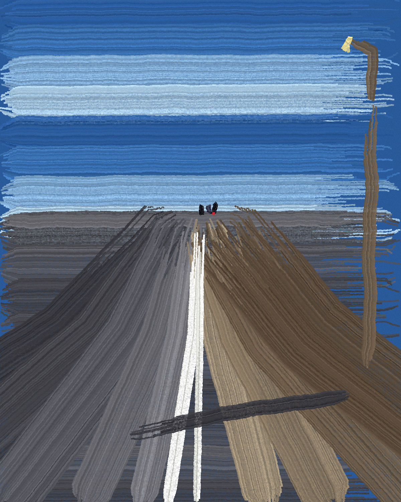

The white strip leads the eye to them and then leaves it there. The lamp is near and lit; the three are not.
2026. Painted in code with a bristle brush I built. The road began in a photograph of a station platform that came to me by chance (Nienburg, Wikimedia Commons); nothing of the photograph is left but the strip.